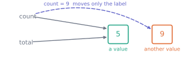

2. Values, names and types
Python · Unit 2
Why this unit is here
P1 ended with "22C" + 5 refusing to work. That refusal is the subject of this unit.
Every value in Python has a type, and the type decides what you are allowed to do with it. Most confusing errors in a beginner’s first month come down to a value not being the type they assumed. Learning to ask what type is this, actually? — and to answer it in one line — removes most of them.
2.1 Before you start
You should be able to:
Quick check. Without running it, what does this print?
print(3 + 4)
print("3" + "4")
TipShow the answer
7, then 34.
The + symbol does two different jobs depending on what sits either side of it: arithmetic on numbers, joining on text. That is not Python being inconsistent — it is the type deciding the meaning, which is exactly this unit’s subject.
2.2 The idea
Writing x = 5 does not put 5 into a box called x. It creates the value 5 and attaches the name x to it, like a luggage label. The name is not the thing.
That distinction sounds academic until you meet its consequences, so it is worth a picture:
In code:
count = 5
total = count # a second label on the same value
count = 9 # move the first label to a different value
print("count:", count)
print("total:", total)count: 9
total: 5total still refers to 5. Reassigning count moved one label; it did not reach inside total and change anything. For the simple values in this unit that is easy to accept, and in P3 it becomes something you must think about.
2.3 The mechanics
The five types to recognise
values = [42, 3.14, True, "hello", None]
for value in values:
print(f"{repr(value):<8} {type(value).__name__}") # :<8 pads to 8 characters42 int
3.14 float
True bool
'hello' str
None NoneTypeint— a whole number, of any size. Python will happily hold a 200-digit integer.float— a number with a decimal part, stored to finite precision. More on that below, because it will bite you.bool—TrueorFalse. Use these for logical state, not as 1 and 0.str— text, in quotation marks."5"is text;5is a number.None— the deliberate absence of a value. Not zero, not an empty string; a positive statement that there is nothing here. Its type is calledNoneType, andNoneis its only value.
Converting on purpose
reading = "22.5"
print(float(reading) + 5)27.5Conversion works when the value has a sensible reading in the target type, and raises an error — stops with a traceback — when it does not:
float("22C")--------------------------------------------------------------------------- ValueError Traceback (most recent call last) Cell In[5], line 1 ----> 1 float("22C") ValueError: could not convert string to float: '22C'
That failure is a feature. Python could have guessed 22 and thrown away the C, and then your temperature data would silently lose its units.
Floats are approximate
This is the one that surprises everyone:
print(0.1 + 0.2)
print(0.1 + 0.2 == 0.3) # == asks "are these equal?"; a single = attaches a name0.30000000000000004
FalseNothing is broken. Computers store numbers in binary, using only the digits 0 and 1, and 0.1 has no exact binary representation — just as 1/3 has no exact decimal one. The tiny error is real and unavoidable.
The consequence for you is a rule: never test computed floats with ==. Test whether they are close enough:
import numpy as np
print(np.isclose(0.1 + 0.2, 0.3))TrueIntegers are exact, so == is fine for them. It is floats that need care, and this is why M4 checks a derivative with np.isclose rather than ==.
f-strings
To build text that contains values, put an f before the quotation mark and the values in braces:
name = "Life sciences"
mean = 60.5137
count = 57
print(f"{name}: mean {mean:.2f} over {count} students")Life sciences: mean 60.51 over 57 students:.2f means “as a float, to two decimal places”. This is how every number in these notes is printed, and it saves you from reporting a mean to twelve digits you cannot justify.
Naming
A name should say what the value is, and what unit it is in:
temperature_c = 21.5
elapsed_seconds = 90
proportion_passed = 0.83
# :.0% shows a proportion as a percentage with no decimal places
print(f"{temperature_c}°C, {elapsed_seconds}s, {proportion_passed:.0%} passed")21.5°C, 90s, 83% passedt = 21.5 is shorter and tells a reader — including you in a fortnight — nothing. Units in the name have prevented more errors than any other habit in this course.
2.4 Worked example
Reading a value whose type is not what you assumed.
The cohort file is text on disk. Every column arrives as characters, and something has to decide what they mean. Watch what happens when that decision is skipped:
score_from_file = "68.4"
bonus = 5
print("what we have:", repr(score_from_file), type(score_from_file).__name__)what we have: '68.4' strscore_from_file + bonus--------------------------------------------------------------------------- TypeError Traceback (most recent call last) Cell In[11], line 1 ----> 1 score_from_file + bonus TypeError: can only concatenate str (not "int") to str
The error is exactly the one from P1. Now convert on purpose, and check:
score = float(score_from_file)
print("converted:", repr(score), type(score).__name__)
print("with bonus:", score + bonus)converted: 68.4 float
with bonus: 73.4One thing worth noticing before you move on. "68.4" + "5" would not have raised — it would have produced "68.45", silently, and everything downstream would have been wrong without a single error message.
print(repr(score_from_file + "5"))'68.45'An error that stops you is a good outcome. The dangerous case is the operation that succeeds and means something else.
2.5 Try it yourself
Exercise 1 Predict each result, then run them.
print(7 / 2)
print(7 // 2)
print(type(7 / 2).__name__)
TipShow the solution
3.5, 3, float.
/ always produces a float, even when the division is exact — 4 / 2 gives 2.0, not 2. // is floor division: it divides and rounds down to a whole number.
The third line is the one people get wrong. 7 / 2 is a float because / always is.
Exercise 2 Why does the first of these print False and the second True?
print(0.1 + 0.2 == 0.3)
print(1 + 2 == 3)
TipShow the solution
The second uses integers, which are stored exactly, so the comparison is exact.
The first uses floats. 0.1 and 0.2 cannot be represented exactly in binary, so their sum lands a hair away from 0.3 — about 5.6 × 10⁻¹⁷ above it. == asks whether they are identical, and they are not.
Use np.isclose for computed floats. Reserve == for integers, strings, and booleans.
Exercise 3 A colleague stores “no reading was taken” as the number -999. Give two distinct reasons None would be better, and say when -999 might still be forced on you.
TipShow the solution
Two reasons:
-999participates in arithmetic. Take a mean and it silently drags the answer down; nothing warns you.Nonecannot be added to anything, so the mistake becomes an error you can see.-999is indistinguishable from a genuine measurement of −999. If the quantity could ever legitimately take that value, the two meanings are now merged and cannot be separated.
When it is forced on you: a legacy file format or an instrument that emits a sentinel — a stand-in value such as -999 that means “missing”. Then convert it to a proper missing value as you load the data, record how many you converted, and never let the sentinel reach a calculation. P9 does exactly this.
2.6 Check it in Python
Two habits, both one line each.
Ask what you actually have rather than assuming:
mystery = "12.9"
print(repr(mystery), "→", type(mystery).__name__)'12.9' → strrepr() rather than print(), because print("12.9") and print(12.9) look identical on screen while repr shows the quotation marks that distinguish them.
Compare computed floats with a tolerance, and see the difference the choice makes:
total = 0.1 + 0.2
print("exact equality :", total == 0.3)
print("np.isclose :", np.isclose(total, 0.3))
print("the gap :", total - 0.3)exact equality : False
np.isclose : True
the gap : 5.551115123125783e-17The gap prints as 5.551115123125783e-17, where e-17 is Python’s way of writing × 10⁻¹⁷. So it is about 5.6 × 10⁻¹⁷ — far too small to matter for any measurement, and far too large for == to ignore.
np.isclose uses a tiny default tolerance. When your data have a natural precision, say so with atol (the largest difference you will call equal): exam marks recorded to one decimal place might use np.isclose(a, b, atol=0.05).
2.7 Common wrong turns
Where this usually goes wrong
- Testing computed floats with
== -
Arithmetic on floats accumulates tiny errors. Use
np.isclose, and choose a tolerance that means something for your data. - Assuming a number-looking thing is a number
-
"5"is text. It arrives that way from files, forms and web pages. Convert deliberately and check the type when a result surprises you. - Treating
Noneas zero or as an empty string -
Nonemeans nothing was recorded. Zero is a measurement. Conflating them changes your answers and hides the fact that data is missing. - Using a sentinel like
-999for missing data - It survives into every calculation it touches. If a format forces it on you, convert it the moment you load the file.
- Naming values
x,df,data,temp -
You will not remember what they held.
temperature_ccosts eleven characters and carries the unit with it. - Assuming
printshows you the type -
printshows a value’s appearance."12.9"and12.9look the same. Userepr()ortype()when the distinction matters.
2.8 Check yourself
Answers are at the foot of the page.
What is the type of
7 / 7?intfloatbool- depends on the values
The division comes out exact, but the type depends on the operator, not on the result. What does / always give?
bool holds only True or False. Division gives a number.
In Python 3 this operator gives the same type whatever the values. Which type?
a = [1, 2], thenb = a. Hasbgot its own copy of the list, or another label on the same one?
- Give a case where
"5" + "5"is a bug even though nothing raises.
- Why is
float("22C")raising an error better than it guessing 22?
- Someone reports a mean of
-142.7from scores that should lie between 0 and- What would you check first?
TipShow the answers
(b)
float./always produces a float, so7 / 7is1.0. By contrast,7 // 7gives the integer1.Another label on the same list. Nothing was copied. This matters far more for lists than for numbers, because a list can be changed in place — which is P3’s subject.
Any time the two values are numbers that arrived as text.
"5" + "5"gives"55", which is not 10 and not an error. Totals that are wildly too large are a classic symptom of adding numbers that were still strings.Because guessing would silently discard information — the
Cmight mean Celsius, or a grade, or a data-entry slip. An error forces you to decide what the value means, once, on purpose.Whether a missing-value sentinel like
-999is in the data and got included in the mean. Count how many values are impossible before doing anything else.